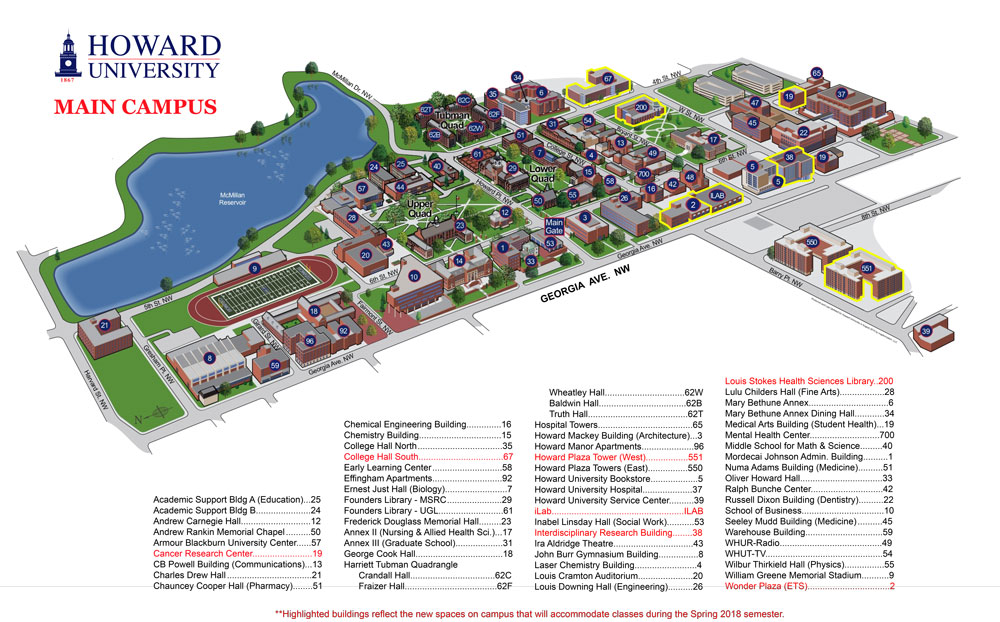

Hello Howard University First Time in College Students!
Welcome to Howard University! As a first time in college student, take full advangtage of Bison Week to immerse yourself in the campus life. Meet new people, join clubs, and attend events to make lasting friendships. Make sure you go up to people and start conversations; everyone is eager to connect. Take your time to explore D.C., grow, and create unforgettable memories. We have bulit this webiste as an all inclusive guide on how to navigate the ups and downs of Howard Univeristy. From handling classes to dorm life to navigating a social life, this page will prepare you for all you will face.
Exploring Washington D.C. as a freshman at Howard University is an enriching experience. Our advice is to take advantage of the city's culture and history by visiting landmarks like the National Mall, different museums, and the U.S. Capitol. Utilize the Metro system and busses for an easy and affordable transportation. You can also explore the diverse neighborhoods in D.C. such as Adams Morgan for fine dining, U-Street for its African American history, and Georgetown for shopping and waterfront views. Attend local events and festivals to immerse yourself in the community and make new friends. Balancing your academics with these explorations will help you make the most of your time at Howard.

As a freshman at Howard you should also immerse yourself in the campus life to fully experience what the school has to offer. Homecoming is a major highlight, celebrated with spirit and tradition, featuring events like the parade, fashion show, and Yardfest, where students can enjoy performances from different artists. Besides Homecoming, Howard hosts numerous free events throughout the year, including movie nights, cultural festivals, and academic workshops. Engaging in these activities is a fantastic way to meet new people, build a sense of community, and make lasting memories with your fellow Bison.

For freshman at Howard University, excelling in academics is crucial to a successful college experience. It's important to attend all classes regularly, participate actively, and utilize office hours to build a relationships with your professors. Howard alsso offers numerous career fairs and netwroking events, providing invaluable and learn about internships and job prospects. Engaging in these events early on can set a strong foundation for your career. Balancing academics with professional development opportunities can enhance your college journey and future career.
Freshman at Howard University take advantage of the abundant opportunities the school offers. From joining various student organizations and professional societies to participating in internships, research programs and confrences, there's no shortage of ways to get involved. Networking is key, so attend events, workshops, and career fairs to connect with alumni and industry professionals. We recommend to utilize the resources like academic advising to stay on track and upperclassman mentors for your career goals. Being proactive and engaged will help you make the most of your time at Howard.
Managing finances as a freshman at Howard University involves careful planning and budgeting. It's essential to keep track at all
expenses, including tuition, housing and daily living costs. We advise you to utilize resources like financial aid office to explore scholarships, grants
work-study opportunities. Creating a monthly budget can help prevent overspending, and using student discounts on food delivery services can help you
save money on essentials. Additonally, consider opening a student bank account with no fees to learn basic financial literacy and to build a strong
foundation for future financial stability.
In conclusion, thriving as a freshman at Howard University requires a blend of academic diligence, social engagement, and financial responsibility. Academically, it's crucial to utilize resources like tutoring centers and maintain a disciplined study routine. Socially, getting invovled in campus organizations and events can help build a supportive community. Financially, careful budgeting and exploring financial aid options can ensure stability. Balancing these aspects will not only enhance your college experience but also set a strong foundation for future success.